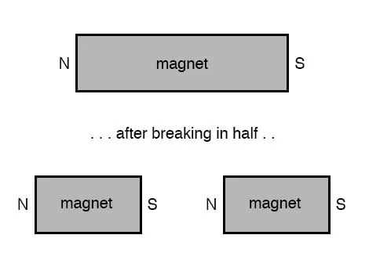
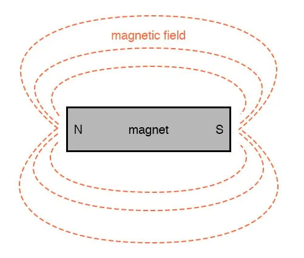
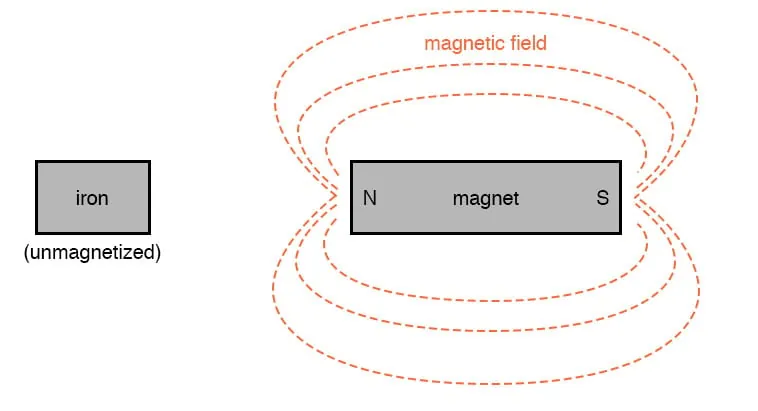
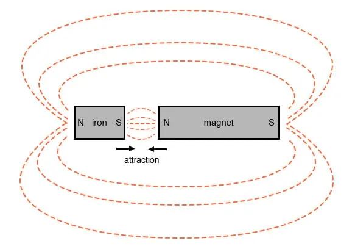
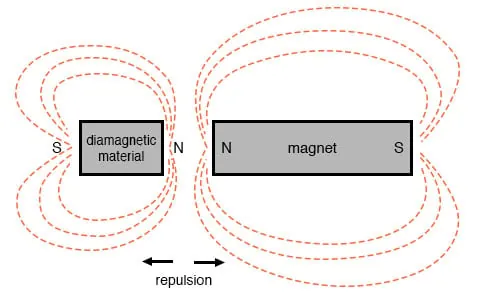

Centuries ago, it was discovered that certain types of mineral rock possessed unusual properties of attraction to the metal iron. One particular mineral, called lodestone, or magnetite, is found mentioned in very old historical records (about 2500 years ago in Europe, and much earlier in the Far East) as a subject of curiosity.
Later, it was employed in the aid of navigation, as it was found that a piece of this unusual rock would tend to orient itself in a north-south direction if left free to rotate (suspended on a string or on a float in water).
A scientific study undertaken in 1269 by Peter Peregrinus revealed that steel could be similarly “charged” with this unusual property after being rubbed against one of the “poles” of a piece of lodestone.
Unlike electric charges (such as those observed when amber is rubbed against cloth), magnetic objects possessed two poles of opposite effect, denoted “north” and “south” after their self-orientation to the earth. As Peregrinus found, it was impossible to isolate one of these poles by itself by cutting a piece of lodestone in half: each resulting piece possessed its own pair of poles:

Like electric charges, there were only two types of poles to be found: north and south (by analogy, positive and negative). Just as with electric charges, same poles repel one another, while opposite poles attract. This force, like that caused by static electricity, extended itself invisibly over space, and could even pass through objects such as paper and wood with little effect upon strength.
The philosopher-scientist Rene Descartes noted that this invisible “field” could be mapped by placing a magnet underneath a flat piece of cloth or wood and sprinkling iron filings on top. The filings will align themselves with the magnetic field, “mapping” its shape. The result shows how the field continues unbroken from one pole of a magnet to the other:

As with any kind of field (electric, magnetic, gravitational), the total quantity, or effect, of the field is referred to as a flux, while the “push” causing the flux to form in space is called a force. Michael Faraday coined the term “tube” to refer to a string of magnetic flux in space (the term “line” is more commonly used now). Indeed, the measurement of magnetic field flux is often defined in terms of the number of flux lines, although it is doubtful that such fields exist in individual, discrete lines of constant value.
Modern theories of magnetism maintain that a magnetic field is produced by an electric charge in motion, and thus it is theorized that the magnetic field of a so-called “permanent” magnets such as lodestone is the result of electrons within the atoms of iron spinning uniformly in the same direction.
Whether or not the electrons in a material’s atoms are subject to this kind of uniform spinning is dictated by the atomic structure of the material (not unlike how electrical conductivity is dictated by the electron binding in a material’s atoms). Thus, only certain types of substances react with magnetic fields, and even fewer have the ability to permanently sustain a magnetic field.
Iron is one of those types of substances that readily magnetizes. If a piece of iron is brought near a permanent magnet, the electrons within the atoms in the iron orient their spins to match the magnetic field force produced by the permanent magnet, and the iron becomes “magnetized.” The iron will magnetize in such a way as to incorporate the magnetic flux lines into its shape, which attracts it toward the permanent magnet, no matter which pole of the permanent magnet is offered to the iron:

The previously unmagnetized iron becomes magnetized as it is brought closer to the permanent magnet. No matter what pole of the permanent magnet is extended toward the iron, the iron will magnetize in such a way as to be attracted toward the magnet:

Referencing the natural magnetic properties of iron (Latin = “ferrum”), a ferromagnetic material is one that readily magnetizes (its constituent atoms easily orient their electron spins to conform to an external magnetic field force). All materials are magnetic to some degree, and those that are not considered ferromagnetic (easily magnetized) are classified as either paramagnetic (slightly magnetic) or diamagnetic(tend to exclude magnetic fields). Of the two, diamagnetic materials are the strangest. In the presence of an external magnetic field, they actually become slightly magnetized in the opposite direction, so as to repel the external field!

If a ferromagnetic material tends to retain its magnetization after an external field is removed, it is said to have good retentivity. This, of course, is a necessary quality for a permanent magnet.
REVIEW: